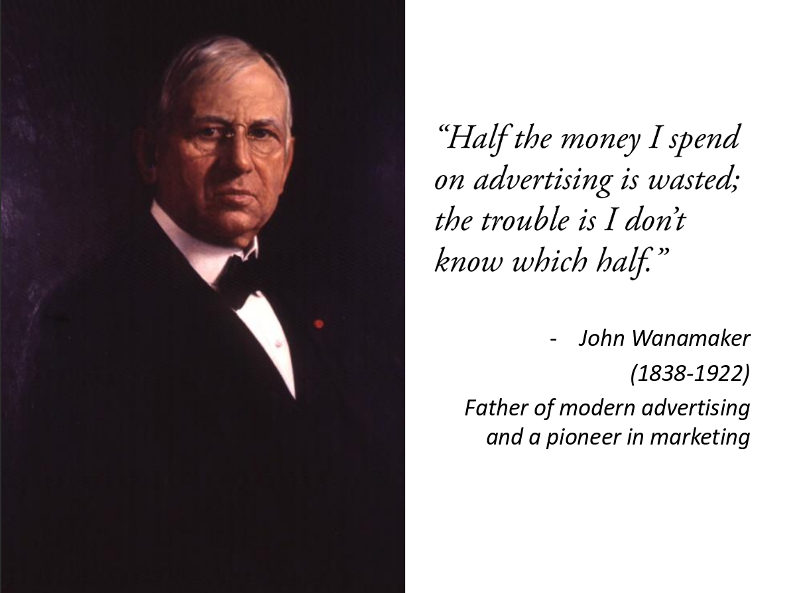
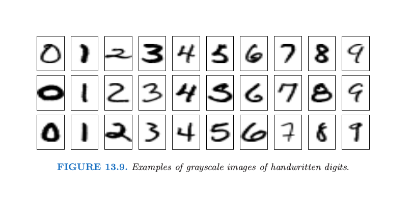
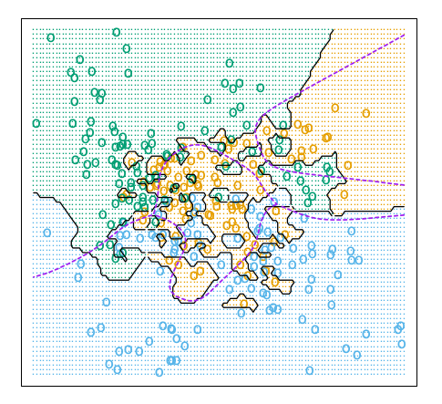
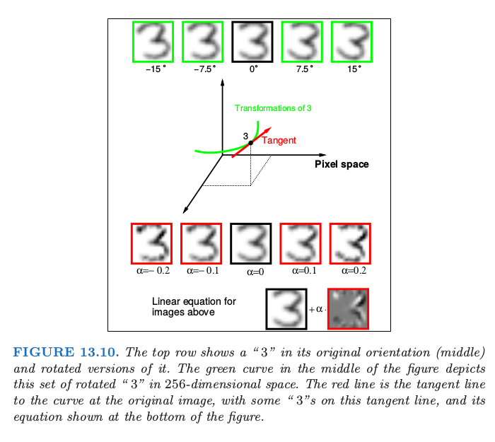
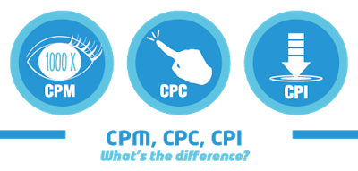

- R 語言翻轉教室簡介
- 從翻轉教室到機器學習
- 在工作中使用機器學習
從R 語言翻轉教室到機器學習
Wush Wu
Taiwan R User Group
今日大綱
R 是什麼？
和其他工具相比，R 的特色
- R 有非常先進的數據視覺化系統
- R 有很多的進階數據分析工具
- R 是完整的資料科學解決方案
R 能提升資料科學團隊的生產力
資料的收集
library(quantmod)
getSymbols("^TWII")
head(TWII)
[1] "TWII"
| TWII.Open | TWII.High | TWII.Low | TWII.Close | TWII.Volume | TWII.Adjusted |
|---|---|---|---|---|---|
| 7871.41 | 7937.26 | 7843.60 | 7920.80 | 5710600 | 7920.776 |
| 7954.96 | 7999.42 | 7917.30 | 7917.30 | 5951400 | 7917.276 |
| 7929.89 | 7955.90 | 7901.24 | 7934.51 | 5717400 | 7934.486 |
| 7940.20 | 7942.23 | 7821.71 | 7835.57 | 5181400 | 7835.546 |
| 7778.57 | 7797.57 | 7736.11 | 7736.71 | 4292400 | 7736.687 |
| 7778.38 | 7827.93 | 7778.38 | 7790.01 | 4516000 | 7789.987 |
資料的處理、分析: AirbnB uses R to scale data science
- 開發Rbnb 套件
- 使用者：Airbnb's engineering, data science, analytics and user experience teams
- 功能：從Hadoop / SQL中撈取資料到R、處理Missing Data、計算常用的敘述統計、資料整合
- 結果：
溝通、報表
- Reproducible Research
- R Markdown
- R Notebook
- Jupyter ir-kernel
整個團隊都用R 之後
- 工程的經驗可以共享
- 開發客製化套件可以共享
- 實驗有更高的可重複性
和其他工具相比，R 的特色
- R 有非常先進的數據視覺化系統
- R 有很多的進階數據分析工具
- R 是完整的資料科學解決方案
- R 可以提升資料科學團隊的生產力
學R 與推廣R 的挑戰
R 為什麼難學？R語言的設計
- 沒有GUI （吃英文打字）
- R 的官方文件對新手不友善
- R 的內建說明(help)不是針對非程式設計師
- 函數的名稱不一致
- 同樣的事情可以用太多種方法達成
- 資料結構複雜
- 物件導向複雜
R 為什麼難學？學習者的心態
- 學R 的同學通常都不具備程式背景
- R 不是針對程式設計師所設計
- 同學學R 的心態
- 資料分析才是主角，R 只是工具
R 為什麼難學？學R不只是學R
- 一個初學者要能善用R ，需要：
- 理解人和程式的溝通方法
- 理解數據分析的方法
- 理解R 處理資料的語法
直接教應用的挑戰
- 如何讓同學瞭解背後的原理
- 不懂原理的學生，碰到沒教的資料就投降
資料結構相關問題
執行迴歸分析，產生下列表單，想擷取第一欄位（Estimate）
因為有出現 NA 的情況，無法完整的將第一欄位擷取出來！
（有很多組需要執行，每組所估算出的 Beta 值長度不一）
希望能保留完整六個 Beta 值
（Intercept,data[,2],data[,3],data[,i],data[,j],data[,i]:data[,j]）
想請教版上先進，可以如何達到這的目標，謝謝各位
直接教語法、原理的困難：
- 很難持續去學一個「現在沒有在用」的工具
- 背誦指令很困難、很無聊
- 教學形式很挑戰：
- 演講：聽過就忘了
- 帶著做：跟不上就放空了
R 關於例外處理
然後我想略過這個錯誤，繼續執行或是再執行一次這一行程式碼嗎？
因為目前遇到的狀況是，同樣的參數，有時會有錯誤訊息，
有時沒有，所以我想當錯誤發生時，略過他。
以下是出現錯誤時的錯誤訊息：
錯誤在UseMethod("xmlNamespaceDefinitions") :
沒有適用的方法可將 'xmlNamespaceDefinitions' 套用到 "NULL" 類別的物件
學習與教學上的挑戰
- R 處理資料時的所需知識很零碎、無系統
- 學生的程度差異很大
- 沒背景的學生，光學語法就忙不過來
- 有背景的學生，會想聽很多深入的知識
R 語言翻轉教室
Live Demo: 在R學R

{kind=link}
不一樣的學習體驗
- 利用問答、過關的方式，刺激學習動機
- 問題的設計由淺入深
- 每個章節的最後，都有「真實資料處理」的練習
- 同學可以依照自己喜歡的速度學習
01-RBasic-02-Data-Structure-Vectors
# 社會服務業自民國87至民國91年的年度用電量（度）
year1 <- 87:91
power1 <- c(6097059332, 6425887925, 6982579022, 7323992602.53436, 7954239517)
# 製造業自民國87至民國91年的年度用電量（度）
power2 <- c(59090445718, 61981666330, 67378329131, 66127460204.6482, 69696372914.6949)
# 請同學選出年度(`year1`)中，社會服務業的的用電量超過`7e9` 的年份。
# （`7e9`是R 的科學符號，代表`7 * 10^9`）
year1.answer1 <- <請填寫你的程式碼>
# 接著請同學計算「社會服務業從民國87年到91年的平均用電量」
power1.mean <- <請填寫你的程式碼>
02-RDataEngineer-01-Parsing
# 這是從 <http://data.gov.tw/node/7769> 下載的海盜通報資料
# 由於這份文件並沒有遵循任何已知的常見格式
# 所以我們必須要利用這章所學的技巧
# 才能從中翠取出資訊
# 首先，我們把該檔案載入到R 之中
pirate_info <- readLines(file(pirate_path, encoding = <請填寫正確的encoding>))
02-RDataEngineer-06-Join
#' 請用各種方式讀取`gdp_path`的資料、整理資料，並把最後的結果存到變數`gdp`。
#' 提示：`gdp_path`中的第一欄數據是年/季、第二欄數據是該季的GDP(百萬)
...
#' cl_info的資料包含各家銀行的房貸餘額（mortgage_bal）資訊與資料的時間（data_dt）。
#' 請用各種方法整理cl_info的資料，把最後的結果整理至`cl_info_year`
...
#' 最後請同學用這門課程所學的技術整合`gdp`與`cl_info`的資料，
#' 計算出房貸餘額與gdp的比率（mortgage_total_bal / gdp）。
給魚吃，也教怎麼釣魚
- 我們介紹套件，我們也介紹怎麼摸套件
vignetteshelp- 閱讀函數的簽名式
example
限制
- 教材只專注於：「R 處理資料的語法」
- 教材不教資料分析的方法、統計
- 教材沒辦法很好的教授「人與程式的溝通邏輯」
- 但是是很好的練習
課程內容：
- 00-Hello-DataScienceAndR
- 01-RBasic
- 02-RDataEngineer
- 03-RVisualization
- Optional-Programming
- Project-ROpenData
設計理念
- 資料科學團隊的Hello World
- 分析技術則不適合在翻轉教室中教授
如何找到R語言翻轉教室？
- 請Google:
R語言翻轉教室或直接造訪： http://DataScienceAndR.org - 歡迎各界來信：wush@datascienceandr.org
- 對於教材有任何問題或指教
- 來信索取雲端伺服器的測試用帳號
- 課堂的老師希望與我們合作，使用學生的追蹤資料
教材，就是越多人用過越成功

- 整套教材由Wush Wu、Chih Cheng Liang、Cheng-Yu Lin和Johnson Hsieh製作，以及其他的貢獻群，以創用CC 姓名標示-相同方式分享 3.0 台灣 授權條款釋出
使用統計
- 時間範圍：從2016-02-13起至2016-07-15
- 使用者人數估計：1238
- 使用者進入課程的次數：9528
- 使用者完成課程的次數：5301
R語言翻轉教室要學多久？

從翻轉教室到機器學習
關於我
- 台大電機所博士候選人，研究領域為網路廣告推薦系統
- 廣告的價值預測
- 廣告的排程
- 網路使用者的資訊挖掘
翻轉教室中的知識
- 處理資料的技術
- 收集資料
- 清理資料
- 整合資料
- 觀察資料
- 不涉及進階分析方法的使用
專精機器學習需要哪些知識？
- 機器學習
- 外功
- 整理資料與轉換資料格式
- 操作機器學習套件
- 評量模型的好壞
- 內功
- 訊息理論、線性代數、數理統計、最佳化、線性模型
- 外功
- 特定領域
- 影像辨識、語音分析、文字探勘...
例子一：從文字來猜測這是正面或負面影評
"<br /><br />This movie is full of references. Like \"Mad Max II\", \"The wild one\" and many others. The ladybug´s face it´s a clear reference (or tribute) to Peter Lorre. This movie is a masterpiece. We´ll talk much more about in the future."
例子一：從文字來猜測這是正面或負面影評
"I would love to have that two hours of my life back. It seemed to be several clips from Steve's Animal Planet series that was spliced into a loosely constructed script. Don't Go, If you must see it, wait for the video ..."
例子一：五分鐘就可以重現的預測模型
例子一：所用的知識與技術：
例子二：挖掘政府採購資料
- 中華民國政府電子採購網
- 經濟部商業司
例子二：挖掘政府採購資料
- 臺灣菸酒股份有限公司烏日啤酒廠，二氧化碳150,000公斤
- 投標廠商一：長泰氣體股份有限公司，董監事名單：余宗德,洪百芬,黃春潭,陳春銘,蔡長祥,黃添旺,洪至信,洪榮三
- 投標廠商二：台興炭酸股份有限公司，董監事名單：洪至信,黃春潭,蔡長祥,陳春銘,洪百芬,余宗德,黃添旺,洪榮三
限制聲明：董監事名單相同不代表圍標
例子二：所用的知識與技術
- 資料整理、資料詮釋
- 分群演算法
例子三：網路廣告

例子三：Criteo Display Advertising Challenge
- https://www.kaggle.com/c/criteo-display-ad-challenge
- 利用過去的瀏覽紀錄預測未來使用者點擊廣告的機率
例子三：所運用的知識
如何精通機器學習？
- 網路有非常多的學習資源，但是一開使只需要精通一套學習機制
- 任重而道遠，我們要擁有強烈的學習動機
- 建議的學習方式：
- 修課
- 參加社群交流，獲取新知，重現技術
- 參加各式數據預測競賽
例子：內功-->外功
- 攻讀清大統計所碩士班
- 謝老師開讀書會讀：The Elements of Statistical Learning
- 參加社群：https://www.meetup.com/Taiwan-R/
- 學習寫程式、工作
- 學海無涯
- 認識現在的Officer：嘉葳
- 嘉葳推薦了一篇文章：https://yanpanlau.github.io/2016/10/11/Torcs-Keras.html
- 發現新的實用工具：keras與Reinforcement Learning等相關學習資源
例子：外功-->內功(?)
- 學會寫程式，勝任軟體工程師的工作
- 工作之餘，參與數據預測相關競賽
- 重現別人的程式碼
- 學會如何使用套件與調參數
- 修課，收看線上課程：機器學習基石
機器學習一定要會內功嘛？
[問題類型]: 程式諮詢(我想用R 做某件事情，但是我不知道要怎麼用R 寫出來) [軟體熟悉度]:
入門(寫過其他程式，只是對語法不熟悉) [問題敘述]:
1.在使用sparse.model.matrix時，第一行會產生1這個intercept，如果是用xgboost，
似乎都會寫成~.-1，把intercept移除，那如果創造sparse.model.matrix，想用來預估
其他模型，查到的範例似乎都沒有移除1這個intercept，為什麼在xgboost需要移除， 而在預估其他模型便不需移除?
2.如果用hashed.model.matrix，也能夠搭配xgboost嗎，會有移除intercept的問題嗎? [程式範例]: sparse_matrix <-
sparse.model.matrix(Improved~.-1, data = df) [關鍵字]: sparse.model.matrix ,xgboost, hashed.model.matrix
以上的疑問，懇請各位先進解答，謝謝！
例子：手寫辨識

例子：手寫辨識

例子：手寫辨識

機器學習一定要會內功嘛？
- 擁有內功基礎，才能「部份」知道，為什麼機器學習學的好
學習資源
The Elements of Statistical Learning
http://statweb.stanford.edu/~tibs/ElemStatLearn/
- 從統計的觀點出發，描述傳統機器學習方法的原理
- 專注於講解「為什麼」機器學習方法會「準」
- 解釋的過程會有數學，但是數學不是重點
- 適合想了解「為什麼」的人閱讀
The Elements of Statistical Learning
- 涵蓋大部分傳統的機器學習方法
- Logistic Regression (Ch 4)
- Gradient Boosted Decision Tree (Ch 9, 10)
- Deep Learning (Ch 11)
- SVM (Ch 12)
從R學外功
- CRAN Task Views --> Machine Learning
- 比賽常用套件：
- e1071
- xgboost
- glmnet
- ElemStatLearn可搭配上一本書做學習
- 比賽常用套件：
參加競賽
- Kaggle
- 國內的競賽
- DSP數據挑戰賽(聲明：我也是智庫驅動的成員之一)
許多人會在Focum分享實際技術
- Online logistic regression
- Feature hash trick
- Adaptive learning rate
新的機器學習方法...
- 掌握書中技術後，學新的技術都更容易
- 大量數據的最佳化：Stochastic Gradient Descent
- Deep Learning 相關技術
學習內功的好處
- 了解傳統的方法，才能迅速了解新的方法的差異
- 大數據的機器學習與傳統機器學習的差異
- Deep Learning 的相關技術，與傳統機器學習的差異
- 了解「為什麼傳統方法會準」，就能更快速了解「為什麼新的方法會準」
- 限制：
- 許多機器學習的原理，仍然是Open Problem
機器學習的趨勢
- Structure learning
- Transfer learning
- Reinforcement learning
如何應用機器學習
應用機器學習是需要跨部門的準備
- 學習的方向
- 學習的資料
- 學習的系統
例子：廣告系統
- 標的：
- Click
- Conversion
- Buy
- 應用
- 在店消費
- 再行銷(Retargeting)
例子：網路廣告的付費模式
- Cost Per Mille(1000 Impression)
- Cost Per Click
- Cost Per Action
- Cost Per Install
- Cost Per Order

對廣告主來說，哪一種最划算？

對廣告主來說，付出的代價為何？
廣告商的處境
- 從外部買流量，通常是CPM計費
- 廣告主通常依據自己的需求，採用CPC，CPI計費
- 如何制訂購買的價格？使用機器學習
- 學習的標的，受到廣告主的決策所影響
- 實務上，機器學習的目標，是由業務目標所決定
從業務目標到機器學習的目標
- 目標的轉換，需要跨部門的討論
- 越早決定學習的目標、優化的目標越好
- OEC = Overall Evaluation Criterion, OMTM = One Metric That Matters
- 儘量站在客戶的立場做優化
例子：搜尋引擎
- 如何優化: Queries / Month
有沒有使用機器學習的差異
- 對廣告主以CPC收費
- 根據其他業務資料，CPC = 1, Click-Through-Rate(點擊/曝光) = 0.1，我們出價0.1美元購買曝光

如何準備資料
- 不同的網站用不同的價格
- 不同的網站、時間用不同的價格
- 不同的網站、不同的時間與不同的性別有不同的價格
- 不同的事件都有不同的價格
實際的狀況
- 對廣告主以CPI收費
- 沒有Install的資料
再行銷
- 針對在商城看過電視的人，播放電視廣告
- 如何才能機器可學？
機器學習可以提昇點擊率嘛？
- 整體的點擊率
- 個別的點擊率
機器學習系統與一般資訊系統
總結
做中學
- R語言翻轉教室給予大家做中學R的環境
- Kaggle給予大家在競賽中學機器學習的環境
- 但是請同時學習內功，了解「為什麼機器學習會有用」
- 應用機器學習，刺激需求，讓自己更有動力繼續學習
學習機器學習的素材
- 內功
- 外功
- Kaggle
- CRAN Task Views --> Machine Learning
- 比賽常用套件：e1071、xgboost與glmnet，讀Vignettes即可學到兼顧理論與用法的組合技巧
- ElemStatLearn